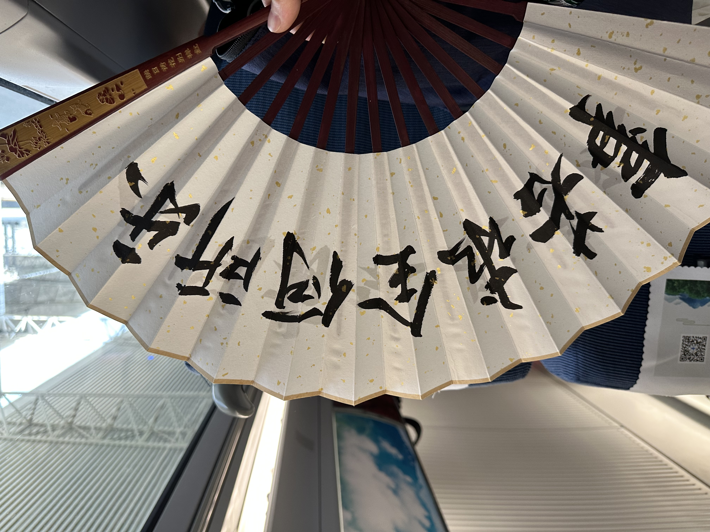

昨天刚信誓旦旦立了个flag准备1天内搞定摩托车驾照，然后买一辆本田幼兽。
山东德州这边允许一天考4项，昨晚8点从北京坐驾照大巴出发，凌晨1点到德州，一夜没睡，练习到早上8点，人比较多，教练也基本不看，练习效果就一般，然后开始考试。不出意外的出现了意外，我挂在了科目二上，科目一满分，科目三满分。我在训练时是表现比较好的，考试的时候和训练车带速不一样，第一次自己大意没有回头看导致撞杆了，第二次熄火两次，扣20分，坡道起步的时候离边线太远又扣10分，最后没有通过。
因为无法继续科目四考试，我买了最近的一班高铁回北京，不用晚上坐大巴回了。下次再考试需要等10天，我准备放弃了，就当2000块钱买了个教训吧∶捷径是世界上最远的距离。
而且摩托车也不是我的必需品，考完驾照后又要花更多的钱买车，倒不如及时止损，到此为止。
小幼兽，拜拜啦。
我心态超好！

打了败仗，溜了溜了。

前两天找人写了个扇面，内容是红楼梦里黛玉说的一句话「事若求全何所乐」，很应景。